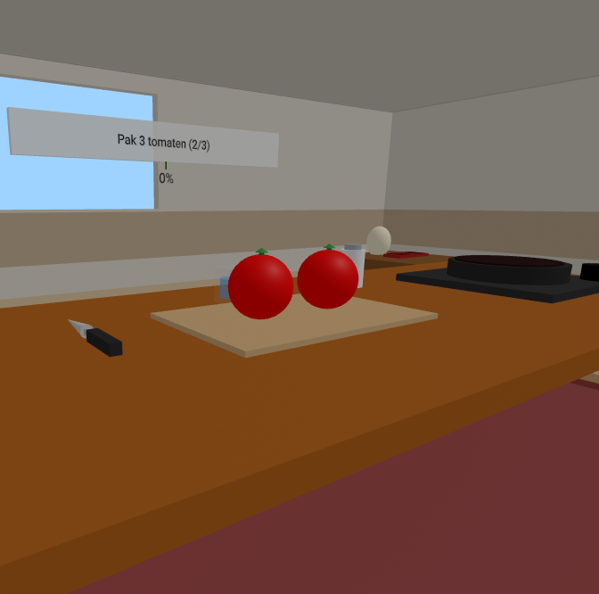
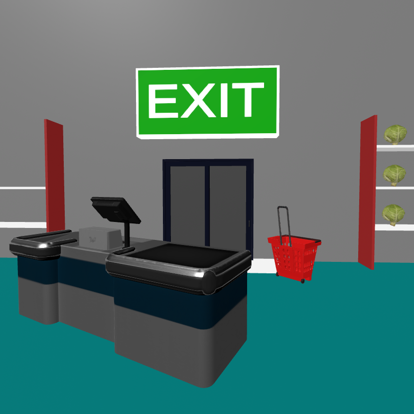

Kook maaltijden met ingrediënten die je al in huis hebt. Je krijgt directe feedback en wordt stap voor stap begeleid met behulp van auditieve aanwijzingen. Ideaal om mee te beginnen.
Oefent vaardigheden zoals:

Loop door een virtuele supermarkt en ervaar hoe het is om boodschappen te doen. Verzamel ingrediënten en reken af bij de kassa. Elke sessie biedt een nieuwe, automatisch gegenereerde omgeving.
Oefent vaardigheden zoals:
Interactief VR prototype gemaakt met A-Frame & Bootstrap 5 in Webpack.